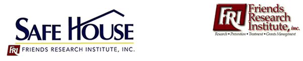

- house -
|  |
Knight-Ridder Newspapers, for poems in the Philadelphia InquirerRichard S. . Friends of the Writers House KELLY WRITERS HOUSE Writers House Homepage . Thank you, Friends, for helping us protect, sustain and enhance the real achievement of the Writers House project. Todd David Slarskey National Writers Union Jane Gutman Eric Stone Robert Sandler Randi and Scott Marshall Constance Bille Joan R. |
|
.3821 Director and Assistant Director sought, to start in July and August 2001 or later. Introduction Beacon Hill Friends House is a Quaker-run cooperative residence for students and working people interested in community living. It is also a center for Quaker educational activities, and the home of the Beacon Hill Friends Meeting which worships in the meeting room on Sundays. The House is a non-profit corporation governed by a Board of Managers composed of members of the Religious Society of Friends (Quakers) from New England. |
 |
There's never been a better time to become a Friend Join the Friends today and support the Royal Opera House. . The Friends support a diverse slection of productions and education projects such as 'Chance to Dance' and 'Write an Opera' Performances by The Royal Ballet and The Royal Opera are at the heart of the Royal Opera House. As a Friend you are uniquely placed to explore the full potential of the Royal Opera House. From the extensive programme of public events which explore the repertory and art forms to free pre-performance talks and recitals. |
 |
Another unexpected benefit of living at Safe House for "P" has been the camaraderie and community he shares with other residents. . Using a philosophy of high tolerance, Safe House seeks to keep this vulnerable community housed by reducing the barriers to care and increasing access to essential services when medical, psychiatric or substance use problems are active. Safe House is a subsidiary of Friends Research Institute, which has the mission, to seek personal and societal health and well being through research and education for the prevention and treatment of illness. Like many who come to Safe House, "P" was HIV-positive and homeless. |
A good house site: http://www.randomhouse.com/teachers/index.html